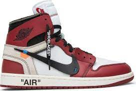
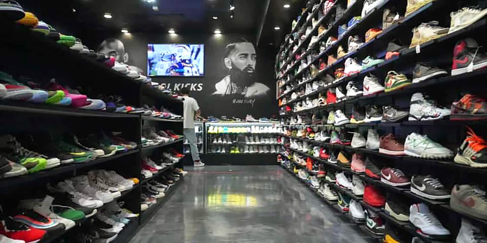
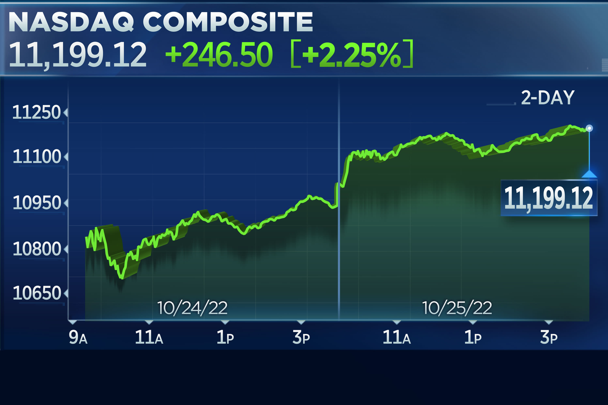
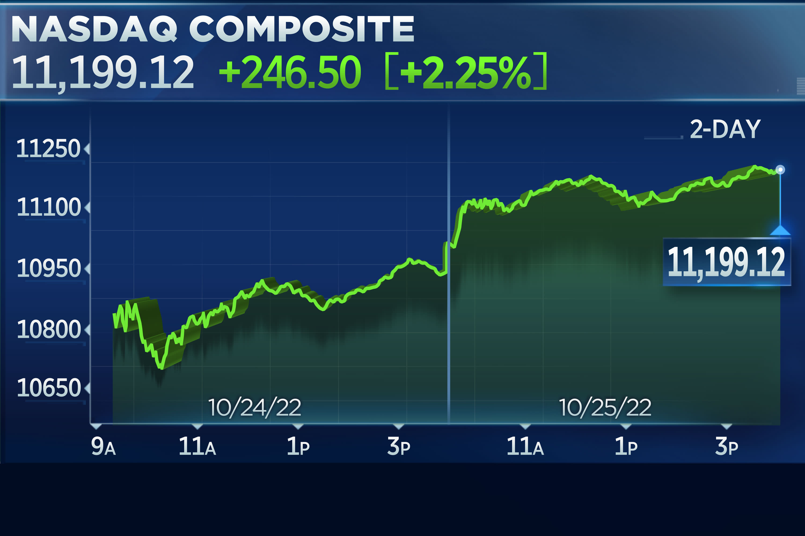
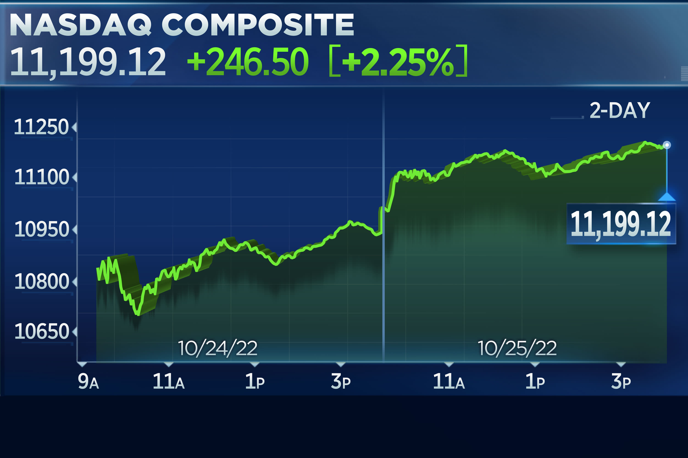

Tyler Pak
Tyler Pak is a driven and ambitious student at the University of California Riverside, pursuing a degree in Business Economics. With a laser focus on academic excellence and a strong work ethic, he has consistently achieved a 4.0 GPA throughout his time at the university.
Tyler's passion for economics began at an early age, and he has always been fascinated by the way markets function and the impact of economic policies on society. This interest led him to pursue a degree in Business Economics, and he has been excelling in his studies ever since.
In addition to his academic pursuits, Tyler has also gained valuable work experience in the field of finance. During his summer breaks, he has worked as an intern at several financial institutions, including JPMorgan Chase and Goldman Sachs. These experiences have given him a practical understanding of the financial industry and have allowed him to apply the theoretical knowledge he has gained in his classes to real-world situations.
Tyler's exceptional academic performance has not gone unnoticed, and he has received numerous accolades for his achievements. He has been on the Dean's List every semester since his freshman year, and he is a recipient of the prestigious Regents Scholarship, awarded to students who demonstrate exceptional academic potential.
Despite his impressive academic and professional accomplishments, Tyler remains humble and grounded. He is actively involved in the community, volunteering his time and resources to various charitable organizations. He is a member of the National Honor Society and the Economics Student Association, where he serves as a mentor to younger students.
Tyler's dedication to his studies and his commitment to serving others have not gone unnoticed by his professors and peers. They describe him as a hardworking, focused, and driven individual who is always willing to help others. His ability to balance academic excellence with a strong commitment to service has made him a role model for many of his peers.
Looking towards the future, Tyler is determined to continue his academic and professional pursuits. He plans to pursue a Master's degree in Economics and hopes to one day work in a leadership role at a major financial institution. His dedication, drive, and passion for economics are sure to take him far in his career, and he is poised to make a significant impact on the financial industry and society as a whole.
Experience
Marketing Intern
• Managed social media
• Discovered marketing strategies
• Experience with creating ads using Facebook ads
Cashier
• Responsible for greeting customers
• Made a variety of drinks to satisfy customers
Math Tutor
• Ran sessions to help students learn calculus
• Reviewed and graded student homework
• Created studying material
• TA'd for over 100 students
Education
UC Riverside
Portfolio


.jpg) 

